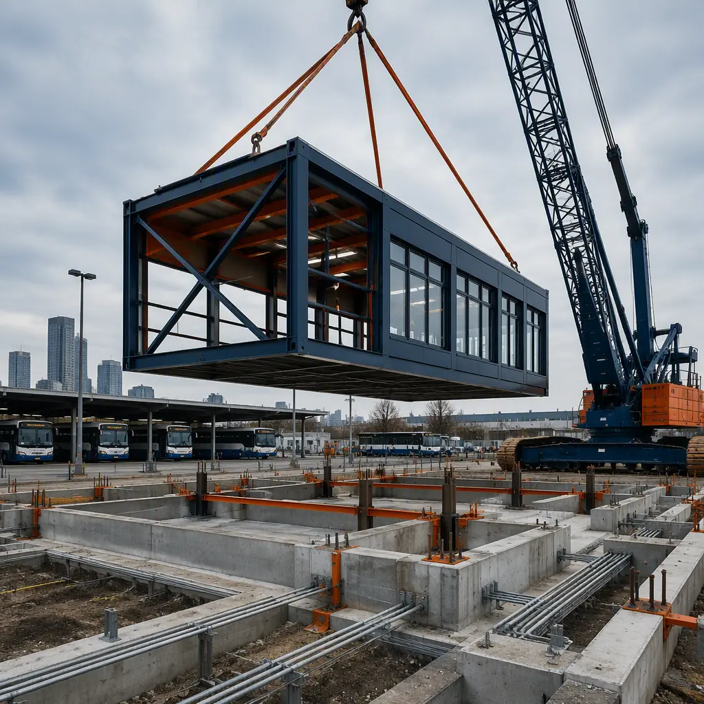
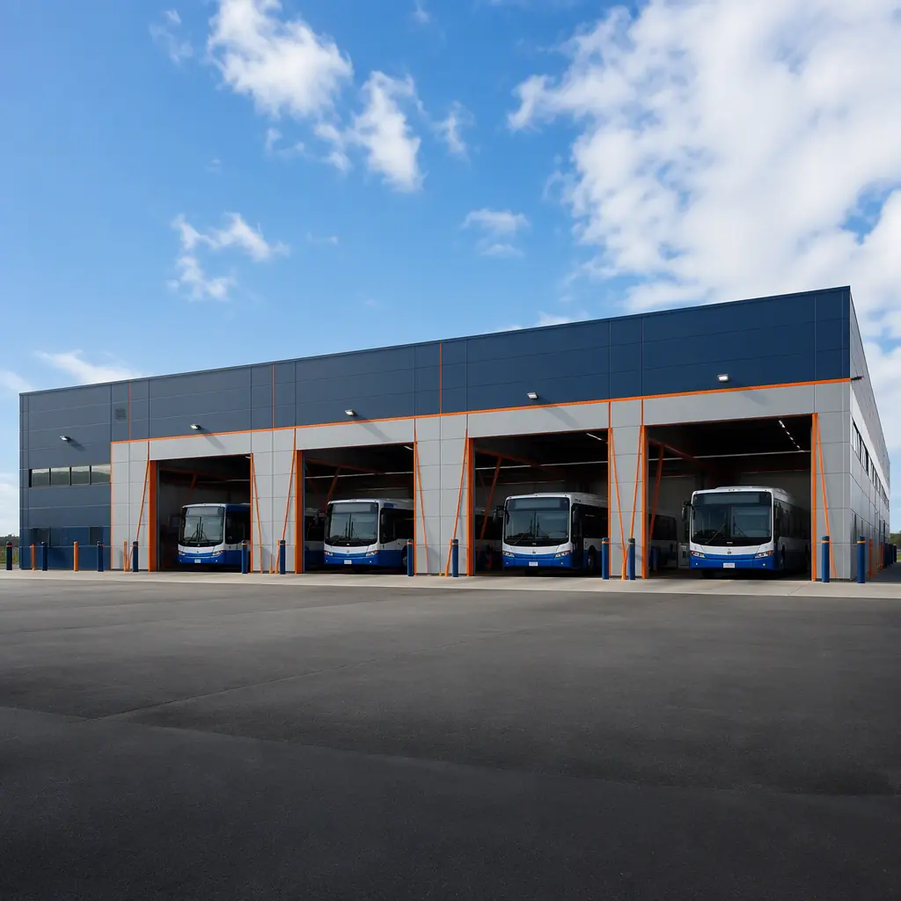
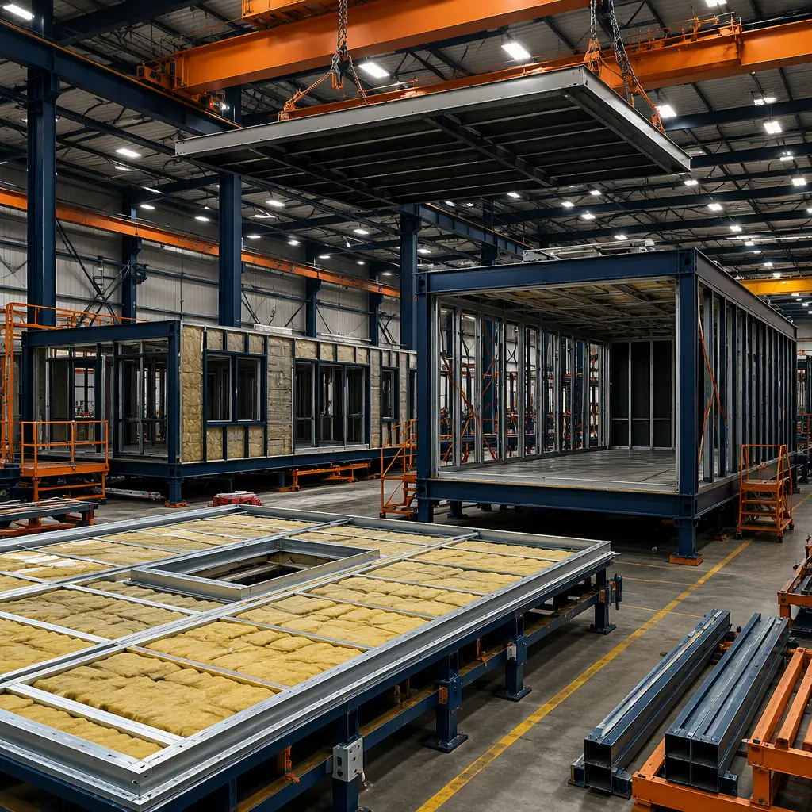
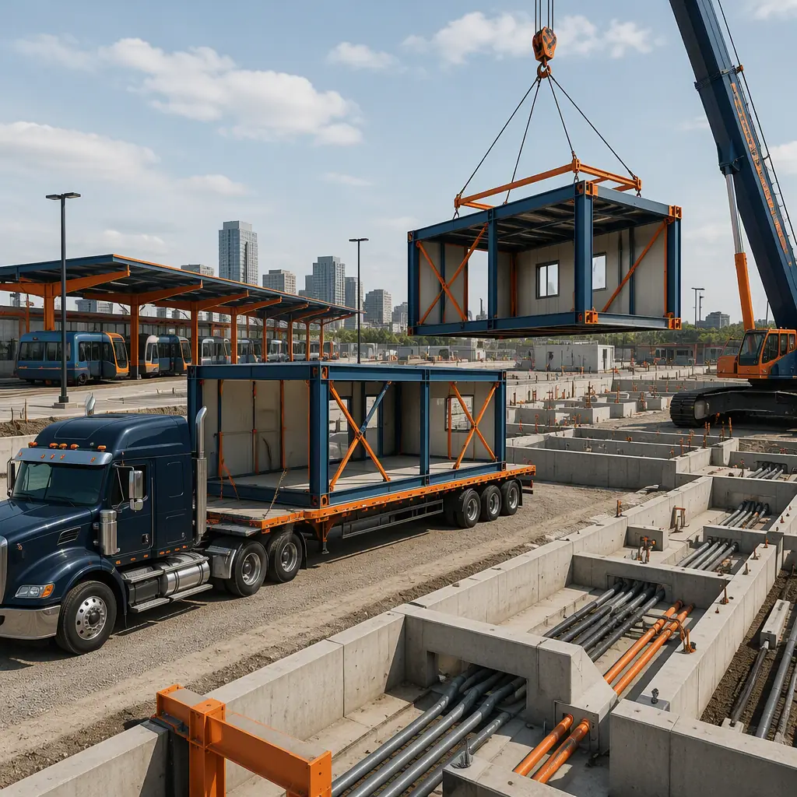

America's transit agencies operate from buildings that are, on average, more than 50 years old. The American Public Transportation Association estimates the national state-of-good-repair backlog for bus maintenance and storage facilities alone exceeds $30 billion, and a single large agency can carry $500 million–$1 billion in deferred depot work. Meanwhile, the transition to zero-emission buses is forcing agencies to rebuild or retrofit nearly every facility they own — electric buses need charging infrastructure, different ventilation, and heavier structural support than the diesel fleet they replace. The result is a once-in-a-generation wave of transit facility construction, and conventional delivery cannot absorb it: a stick-built depot routinely takes 36–48 months from concept to operations. Modular construction compresses that to 30–34 months for a fully equipped maintenance depot, and as little as 14–18 months for a storage-and-admin facility, because 70–85% of the building — including maintenance bays, office modules, and charging infrastructure rooms — is manufactured indoors while site work proceeds in parallel. This guide explains the modern bus depot building program, how factory-built modules satisfy transit-specific engineering requirements, and how agencies and developers should procure a modular transit facility.

Why Transit Agencies Are Rethinking Depot Delivery
Transit facilities sit at the intersection of three pressures that make them uniquely suited to modular construction. First is the age problem: most bus depots in the United States were built between 1960 and 1990, with structural steel, roofs, and MEP systems far past their design life. Second is the electrification mandate: as of 2026, more than 60% of new transit bus orders in the U.S. are zero-emission, and agencies from Los Angeles to New York have committed to 100% electric fleets by 2030–2040. An electric bus depot requires 4–10 MW of charging capacity, battery rooms, and maintenance bays redesigned for high-voltage systems — a full facility replacement, not a retrofit. Third is the funding cycle: federal and state grants through the FTA's Low or No Emission Vehicle Program and Bipartisan Infrastructure Law programs require agencies to obligate funds within fixed windows, which punishes the schedule uncertainty of conventional construction. Modular delivery converts an unpredictable 3–4 year site build into a factory production schedule that can be committed to in a procurement contract. For agencies already familiar with factory-built delivery for other asset classes, our modular government buildings guide covers the broader municipal procurement context, including how agencies have used modular delivery for fire stations, police facilities, and administrative offices.
The Bus Depot Building Program: What a Modern Operations Facility Requires
A full-service bus maintenance depot is one of the most program-dense building types in public infrastructure. A typical facility serving 150–300 buses breaks down as follows:
- Vehicle storage (40–55% of gross area). Indoor or covered bus storage at 60–70 ft clear span per bay, sized at roughly 600–700 sq ft per standard 40-ft bus and 800–900 sq ft per 60-ft articulated bus.
- Maintenance bays (15–20%). 6–12 service bays with in-floor mechanical pits, overhead cranes (2–5 ton), compressed air, lubrication, and fluids dispensing. Each bay needs 50–60 ft of clear length and 16–20 ft of clear height.
- Vehicle wash (3–5%). Drive-through automated wash bay with water reclamation — typically 40–60 ft long with a 90,000–120,000 gallon-per-day reclaimed water loop.
- Parts and support (10–15%). Parts warehouse with high-bay racking, tool cribs, tire shop, body shop, and welding bay.
- Operations and administration (10–15%). Dispatch center, driver's lounge, locker rooms, training rooms, and administrative offices.
Every one of these zones maps onto factory-built modules. Maintenance bays arrive as steel-frame modules with pits pre-formed, crane rails pre-installed, and utility rough-ins pressure-tested; office and dispatch areas arrive as finished architectural modules. For a deeper look at how factory-built structures deliver the clear spans and heavy-duty loads transit facilities need, see our modular industrial and warehouse construction guide, which covers the same structural logic applied to distribution centers.

Clear-Span Module Design: Steel Structure That Stores and Serves a Fleet
The structural heart of a bus depot is the clear-span vehicle storage and maintenance hall. Buses cannot park around columns — a column grid inside the storage area wastes 15–25% of the footprint and complicates circulation. Modular construction solves this with a hybrid approach: factory-built steel portal frames are delivered as modules with 60–70 ft clear spans, then spliced and connected on site to form continuous halls of any length. The modules themselves are fabricated to ±2 mm dimensional tolerance, with camber built into the roof steel to manage deflection under snow and solar loads, and with lateral bracing designed for the local wind and seismic zone — the same engineering discipline MODURA applies to every steel-framed building, documented in our modular steel construction guide.
Because the structural steel is cut, welded, and coated in the factory, the quality of every connection is documented before the module ships. Weld inspection reports, mill certificates, and galvanizing records accompany each module — a submittal package that dramatically shortens plan review and inspection cycles at the authority having jurisdiction, as we explain in our permitting and zoning guide. The factory also installs the roof system, insulation, and exterior cladding, so the building envelope is weathertight from the day it arrives, and interior trades start immediately after set rather than after months of site-based structural work.
Electrification-Ready Depots: Charging, Power, and the Zero-Emission Transition
The single biggest change in transit facility design is electrification. A depot serving 100 electric buses needs 4–10 MW of charging load — comparable to a small data center — and the building must house switchgear rooms, transformer pads, charger pedestals, and battery storage areas. Modular delivery is well suited to this because power infrastructure rooms ship as pre-wired, pre-tested modules: the switchgear module arrives with the main distribution board installed and factory-tested, the charging canopy modules arrive with busway and charger conduits in place, and only the final utility interconnection happens on site. This moves the most schedule-critical and inspection-heavy electrical work into the factory, where it is completed under controlled conditions rather than in a crowded site environment.
Modular depots also support the phased transition most agencies actually follow: a depot built today with diesel bays and a future-proofed electrical backbone can be converted to full electric operation later by swapping service modules and adding charging infrastructure, without touching the main building structure. Agencies planning this transition should read our modular EV fleet charging depot guide, which details charging layout, power distribution, and the depot infrastructure decisions that determine whether a facility can electrify at all.
Factory Production: Why Depot Modules Are Built Indoors
The economics of transit facilities are dominated by labor and schedule, both of which favor factory production. Maintenance bay construction on a conventional site requires coordinated trades — concrete, steel, mechanical, electrical, plumbing — working sequentially over 12–18 months, often in weather that halts work for weeks at a time. In the factory, the same work is a production line: steel fabrication, panel installation, MEP rough-in, and finishing proceed in parallel workstations, with QA inspections at defined gates. The result is that a modular depot's building construction is measured in weeks of factory time plus days of site set, not seasons of site work. The inspection framework behind this — weld verification, MEP testing, dimensional checks at every gate — is the same system MODURA uses across all product types, documented in our factory quality control guide.
Weather independence is a contractual asset for transit projects. A depot being built in the upper Midwest or Northeast does not lose its schedule to frozen ground, rain, or snow because the factory environment is climate-controlled year-round. Even a winter foundation pour that slips a month does not move the opening date — the modules keep coming, and the site set window is measured in days. This schedule certainty is why modular transit projects are consistently delivered within 2–3 weeks of the committed date, while conventional depot projects routinely exceed their schedules by 15–30%. The full comparison of factory-built versus traditional schedules is in our modular construction timeline analysis.

Compliance and Code: NFPA 130, ADA, and AHJ Coordination
Transit facilities carry a specific compliance load that modular construction handles with documentation. Bus maintenance and storage buildings are classified as industrial or storage occupancies under the IBC depending on the program mix, with fire-resistance requirements driven by the presence of vehicle fuel and maintenance operations. Key requirements include:
| Requirement | Typical Standard | How Modular Delivers It |
|---|---|---|
| Fire-resistance rating | IBC occupancy-based, 1–3 hour | Factory-installed fire-rated assemblies with test certifications per module |
| Ventilation / exhaust | IBC mechanical + NFPA 30A for fueling | Factory-installed exhaust ductwork and ERV, tested and balanced pre-shipment |
| Accessibility | ADA / ICC A117.1 | Accessible paths and restrooms designed into module layout |
| Structural / seismic | ASCE 7, local wind and seismic zone | Engineered steel frames with documented lateral system design |
| Electrical / charging | NEC Article 625, utility interconnection | Pre-wired switchgear and charging rooms, factory-tested before shipment |
Every module ships with its compliance documentation, which gives the AHJ a complete submittal at inspection time instead of a fragmented site-built record. Agencies should confirm early in the procurement process that their local building department accepts factory-built assemblies with third-party inspection — most jurisdictions now do, and the trend is accelerating as more public facilities are delivered this way.
Timeline and Cost Benchmarks: What a Modular Depot Delivers
For a typical 60,000–100,000 sq ft bus maintenance depot, modular delivery lands at $220–320 per sq ft for the building and core systems, compared with $260–380 per sq ft for conventional construction of equivalent industrial quality — a 15–25% saving that comes from compressed schedule, reduced site labor exposure, and factory procurement. The bigger number is the schedule: a modular depot reaches operations 12–18 months earlier than a stick-built equivalent, which matters enormously when grant funds are time-limited and when fleet expansion is waiting on the building.
Agencies should also consider the total cost of ownership. Factory-built depots deliver better envelope performance (documented in our building envelope guide), lower maintenance requirements, and the ability to relocate or expand the facility later — a flexibility that conventionally built depots simply do not have. The full cost model, including financing and lifecycle considerations, is covered in our total cost planning guide, and per-square-foot benchmarks across building types are in our modular cost guide.
Transit agencies are not building depots for the fleet they have; they are building for the fleet they will have in 2040. A modular depot turns that uncertainty into a managed asset — the building is delivered faster, documented completely, and designed to be electrified, expanded, and even relocated as the fleet and the service area evolve.

Procurement: RFP Strategy and FTA Funding for Modular Depots
Procurement is where modular transit projects succeed or fail. Agencies should structure the RFP around performance outcomes — a committed operations date, a guaranteed maximum price, and a documented quality program — rather than prescriptive site-built specifications written for conventional delivery. Key steps: (1) define the facility program and fleet plan before writing the RFP, including the electrification scenario the building must support; (2) require bidders to document their factory production schedule and quality gates, not just their construction schedule; (3) budget for the design-assist phase, typically 10–14 weeks, during which the module layout is locked and permit drawings are produced; and (4) align the payment schedule with factory milestones, not just site milestones, because that is where the value is being created. Our modular RFP and procurement guide walks through the complete solicitation structure, and our bid comparison guide explains how to evaluate modular proposals against conventional ones on an apples-to-apples basis.
On funding, modular delivery fits the FTA grant model well because it produces a firm, early commitment on schedule and price — exactly what grant applications need. Agencies using FTA capital funds should confirm that factory production costs are eligible project costs (they are, under standard capital program rules, as manufacturing is a project cost like any other construction labor) and should build the module delivery milestone into the grant's obligation and expenditure plan. The bonds and surety guide covers the bonding requirements agencies will see on modular transit contracts, including factory performance bonds and the typical 100% payment and performance bond structure.